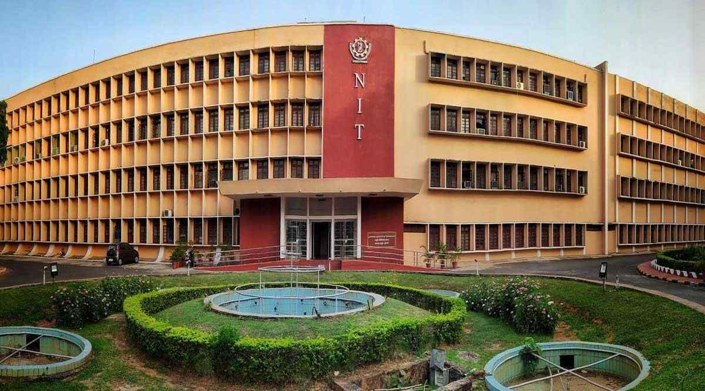

Engineering Colleges for your bright future
Now,Let us have on some colleges with national importance
Colleges Of National Importance:
1)Indian Institute of Technology(IIT)
2)Indian Institute of Information and Technology(IIIT)
3)National Institute of Technology(NIT)
4)Government Funded Universities(GFT)
*Indian Institute of Technology(IIT):
What so special about iit?
IITs have a highly influential and active network of alumni across the globe, education at IITs empowers the students with a critical thinking led scientific approach to solve problems that challenge humanity. The faculty and alumni of IITs have made a huge impact in all sectors of society, both in India and abroad.
Students also get to meet eminent professors, scientists and Nobel laureates while also being made eligible for fellowships, scholarships and financial assistance on projects. Many even take part in student-exchance and internship programmes with the world's best universities including MIT and Harvard.
The IITs have a different standard that they maintain. The engineers who pass out from the IITs are held in high esteem by the recruiters and are also offered higher packages. IITs have great world ranking worldwide. They feature in the top 250-500 universities due to their standard and performance.
After completing graduation from IITs, research and development is also one of the good career options. You can start your career in this field. In R&D industries, you will work as a research engineer. Your work will include providing the engineering solutions for mankind in order to make the lives of humans more comfortable.
Uniqueness of IITs:
IIT is an independent body: IIT act was passed in the parliament (year 1961, Sir Ardeshir's proposal for an IIT,History of Indian Institutes of Technology). The government made IITs and left them alone, unadulterated by any political influence.
IIT JEE considered one of the toughest exam in the country, even the procedure of setting up a IIT JEE question paper is so anonymous that no one knows who is in the committee except for the one who are a part of it.
freedom: no one cares what you wear , whether you come to class or stay in your room playing CS. You are considered adult responsible for your actions.
The environment that promotes creativity, being with students with amazing talents stirs your creative instincts.
leadership: Students come together to organize events, contribute for social cause, work with under privileged students. Such activities are promoted in the students and is passed on as a legacy from seniors to the juniors. As compared to any other institute the scale of these events is large.
Facilities: the aim of setting up an IIT was to provide world class education facilities and a unique atmosphere for academics.
Foreign exposure: Students receive foreign exposure as a part of their internship of as a part of exchange program of foreign university.
Other facilities: apart from these, IITs also provide facilities and platforms for extra co curricular activities like Sports, Music and many more.
Internet: IITs have a good internet facility, LAN or Wify connections are available 24*7 which is very important to mention.
At last, if one utilizes his/her time at IIT, it might prepare you for life but it will surely prepare you to face challenges. Cheers!!
*Indian Institute of Information and Technology(IIIT):
 Why should we join IIIT?
Why should we join IIIT?
For any college to get higher ranks it takes time; with IIIT you have professors with PHDs from IIT-NIT-Overseas so obviously there is standard. Now IIIT being fairly new concept many donot have their permanent campuses, once they start moving to their own campuses they have freedom to improvise on many aspects.
How many were attempting IIITs like Hyderabad Allahabad Bangalore Lucknow when they were new Institutes? Over period of 10–20 years they are reputable institutes and IIIT-H and IIIT-B are considered much above even old IITs today when it comes to research in CSE and ECE field and is reflected in their placements.
If you go by NIRF rankings; problem is it has too many parameters which ranks Newer institutes much below than some mediocre old institutes run by state governments; look at IIIT-H/B ranking they are below 75 if i am not wrong.
Go to those IIIT who are functioning on their own campus, look for Faculty profiles and obviously admissions close to 30K JEE mains rank means students are good they may not be brightest but they are studious ones and know their concepts.
Even those who get into IIT/NIT/BIT even in top branches and struggle to score top ranks do not get lucrative or even moderate campus placements. Never forget it, You have to stay in top of your game no matter where you are
IIIT are improving on coding cultures year after year, so if you are not getting top branches at IIT NIT BIT or even old IIIT new IIIT will definitely deliver you better results if you work hard and make most of available facilities.
Tag of institute does not matter after you pass out from them; what matters will always be Your Academics and How fit and adaptive you are with your Role/Responsibility and what life brings to you.
*National Institute of Technology(NIT):
Why are NIT's popular interms of placements and many aspects?
Here are the advantages I can think of :
1. You're at a sweet spot in terms of competition. The culture isn't as competitive as IITs but way better than local engineering campuses.
2. You get as many opportunities to learn as you get in any IITs
3. Education is cheaper. Practically Free. In some cases even cheaper than IITs although if the recent bills are passed the cost is likely to rise.
4. Most NITs are located far from Mega Cities unlike IITs. This has unique advantages (and disadvantages too). Our NIT has a private beach of its own. You just cannot beat it.
5. Placement statistics of top NITs are at least comparable to that of IITs
6. Lot of scholarship opportunities - both merit and need based. There are few student grants also
7. Since the peer group isn't as good as IIT and NITs follow relative grading too it is easier to get better grades at NITs. And since the opportunities available are comparable to IITs it's harder for talent to get unnoticed. The performance pressure and expectations is also lower which is very helpful
8. Some NITs have much better hostels. I have seen IIT KGP, IIT Bombay, IIT Kanpur and IIT Madras hostels. NITK's hostel is much better than all those. New NITs had their hostel constructed recently. Thus it's equipped with modern facilities.
To attain knowledge regarding other engineering colleges and B.Tech life